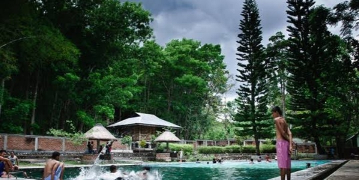

Profil Pengunjung
Hutan Wisata Oeluan menarik berbagai kalangan wisatawan, baik lokal maupun domestik. Wisatawan lokal berasal dari daerah sekitar seperti Kupang dan Atambua, sedangkan wisatawan domestik dari berbagai daerah di Indonesia mulai tertarik mengunjungi tempat ini karena keindahan alamnya yang masih alami.
Pengunjung biasanya datang untuk menikmati pemandangan, berfoto, dan bersantai bersama keluarga atau teman.
💰 Tarif Masuk
Saat ini, belum ada tarif resmi yang dikenakan untuk memasuki kawasan Hutan Wisata Oeluan.
- Pengunjung disarankan membawa uang tunai jika ingin menggunakan jasa pemandu lokal atau membeli makanan dari warung sekitar.
- Kontribusi sukarela kepada masyarakat setempat sangat dianjurkan untuk membantu menjaga kebersihan dan kelestarian kawasan wisata ini.
🕒 Jam Operasional
Hutan Wisata Oeluan terbuka 24 jam untuk umum. Waktu terbaik untuk berkunjung:
- Pagi hari: Menjelang matahari terbit untuk menikmati udara segar dan cahaya alami.
- Sore hari: Sebelum matahari terbenam untuk menikmati suasana sejuk dan pemandangan indah.
Disarankan memulai kunjungan sejak pagi agar terhindar dari kabut yang biasanya turun pada siang hari.
Sumber: batastimor.com • nttfocus.com